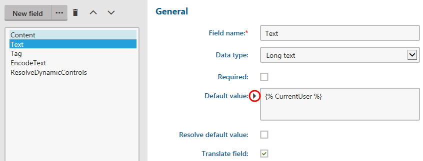

Reference - Field editor
The field editor allows you to define fields for objects (page types, web parts, on-line forms, system classes, etc.). Users can set the values of the fields when editing the resulting form. The interface of visible fields depends on the selected form control (a drop-down list, check-box, etc.).
You can perform the following actions using the field editor:
Creating new fields
Click New field to add new fields.
When creating fields for objects that represent database tables (such as on-line forms, page types or custom tables), choose the Field type:
Standard field - allows you to select a form control, which users can see in the resulting form and save values into the corresponding database column.
Primary key - creates a field that stores the primary identifier for the table.
Field without database representation - creates a field without an equivalent column in the database. For example, you can create a check-box field that does not have a persistent value, but allows users to adjust the visibility of other form fields or affects the processing of the form.
Page field - only available for page type fields. Allows you to choose a general page column from the CMS_Tree or CMS_Document table, and link it to the page field.
To see an example of creating new fields, see Customizing product option forms.
Note: Not all settings may be available depending on the selected Field type. The field editor may also have other options related to the specific object type for which the form is being defined.
|
General |
|
|
Field name |
Sets the name used for the database column (or XML field) that stores the values of the field. Also serves as the field's unique identifier. |
|
Data type |
Sets the data type of the field's value (also determines the data type used by the field's representation in the database). Note: You may encounter an error when attempting to change the data type for fields that already store values of the original type. Most types of values cannot automatically be converted to a different data type (for example text values to date and time). In these cases, you either need to write and run custom code that changes the field type and correctly converts all values, or delete the existing field (and discard all current values) and then create a new field of the required type. |
|
Size |
Sets the maximum amount of characters that can be entered into the field. Only available if the Data type is set to Text. |
|
Required |
If checked, the form can only be saved if this field has a value specified. Disable to make the field optional. |
|
Default value |
Default value of the field pre-filled when the form is loaded. |
|
Resolve default value |
Determines whether macro expressions inserted into the Default value through the Edit value ( ) dialog are resolved directly in the resulting form. Does NOT affect macros placed directly into the default values of text fields, which always remain unresolved in the editing form. Only available when editing the fields of forms that allow users to insert macro values, including:
|
|
Translate field |
Indicates if the field should be included when using translation services with the objects for which the form is defined. Only available if the selected Data type is Text, Long text or File. |
|
Display field in the editing form |
Indicates if the given field should be shown in the form to users. This can be disabled for fields that store internal or system values. |
|
Field appearance |
|
|
Field caption |
Sets the text displayed next to the field in the form. |
|
Field description |
Tooltip which is displayed if a user hovers over the field. |
|
Explanation text |
Text displayed directly below the field in the form. |
|
Form control |
Selects the form control through which users interact with the field in the editing form. |
|
Editing control settings |
|
|
The settings in this section provide a way to configure the parameters defined for the selected Form control. The available options depend on the parameters defined for the given form control. Please see the tooltips of individual parameters for more information. You can switch between Advanced and Simplified mode. In simplified mode, only a limited set of parameters is offered, typically the most important ones. |
|
|
Validation |
|
|
Default error message |
Error message displayed if a user enters invalid input into the field. This message is displayed only if a Validation rule does not have its own Error message defined. |
|
Validation rules |
Specifies the input which the user is allowed to submit in the field. To create a validation rule, click Add validation rule. You can add multiple validation rules for one field, but be careful not to create contradictory rules. See Creating macro rules for more information about validation rules. |
|
CSS styles |
|
|
Field CSS class |
Name of the CSS class applied to the field container. |
|
Caption CSS class |
Name of the CSS class used to style the field label. |
|
Caption style |
Used to set CSS styles for the field's caption. |
|
Control CSS class |
Name of the CSS class used to style the field's form control. |
|
Input style |
Used to set CSS styles for the input entered into the field. |
|
HTML Envelope |
|
|
Content before |
HTML content placed before the form field. Allows you to customize the form layout by adding encapsulating elements around the field, such as <div> tags. |
|
Content after |
HTML content placed after the form field. Allows you to close encapsulating elements from the Content before section (for example </div>). |
|
Field advanced settings |
|
|
Visibility condition |
May be used to enter a macro condition that must be fulfilled in order for the field to be visible in the form. The condition is dynamically resolved when the form is loaded. You can write any condition according to your specific requirements. For details about available macro options and syntax, please refer to Macro expressions chapter. If you wish to create a condition that depends on the state of other fields, you can access them in the macro expression using the corresponding Field name. The data of the fields can then be retrieved through the following properties:
|
|
Enabled condition |
Allows you to enter a macro condition that determines when the field is enabled. If this condition is resolved as false, the field is visible, but its value cannot be edited. You can use the same macro options as described above for the Visibility condition field. |
|
Display in simple mode |
Only available for form control parameters. Indicates whether the parameter is visible when the Editing control settings section of the form control is switched to the Simplified mode in the field editor. To keep the simplified mode as straightforward as possible, it is recommended to enable this setting only for important or frequently used fields. |
|
Has depending fields |
If enabled, the editing form is refreshed via autopostback whenever the value of the given field is changed. This means that other fields can be dynamically updated according to the current value of the field. Note: The actual logic of the dependencies needs to be implemented in the code of the used form controls. |
|
Depends on another field |
You need to enable this option if you wish to have the behavior of the field dynamically changed according to the value of another field. |
Creating new categories
Categories allow you to group multiple fields together. The categories are displayed as sub-headings in the resulting form. Each category contains all field defined below it in the list. Using categories is recommended in large forms to make orientation easier for users.
Click ... next to the New field button and select New category to create categories.
The following properties are available when creating or editing categories:
|
Category |
|
|
Category caption |
Sets the name of the category that is displayed in the resulting form. You can enter macro expressions through the Edit value ( ) dialog. |
|
Collapsible |
If enabled, users can collapse and expand the content of the category in the form. |
|
Collapsed by default |
If enabled, the category is initially collapsed when the form is loaded. |
|
Visible |
Indicates if the category and all of the fields under it are visible in the field editor. |
Moving fields or groups
Select the field or category in the list.
Move the item using the Move up (
 ) or Move down (
) or Move down ( ) buttons.
) buttons.
Moving fields in the list also changes their positions in the resulting form.
Deleting fields or categories
Select the field or category in the list.
Click Delete item ( ).
The field or group is deleted without the option of undoing the deletion.
Setting default form field values through macros
When defining form fields, you can use macro expressions to set dynamic default values (for both visible and hidden form fields).
Click Edit value ( ) next to the Default value and write the macro in the Edit value dialog:
If the field is visible in the editing form, the system resolves the macro directly when users open the form.
If the field is hidden, the macro is resolved when the form is submitted.

Adding macros into default form field values
If you place the macro directly into the Default value of text-based fields, the macro appears unresolved in the field when users view the resulting form.
Note
When editing fields for web part properties, form control parameters, or the properties of UI page templates, the resolving of macros added into default field values via the Edit value ( ) dialog depends on the Resolve default value flag.